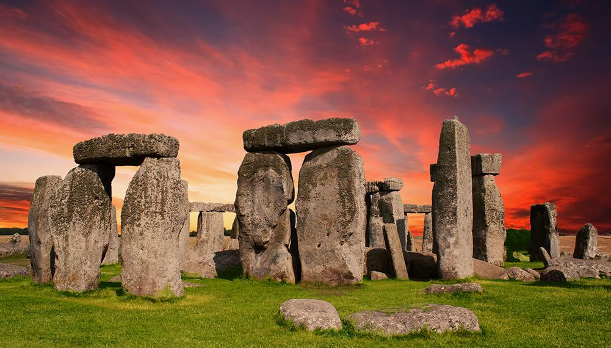

Najpiękniejsze cuda świata
Stonehenge
Piramidy w gizie
Stonehenge
Przez setki lat powstało wiele teorii próbujących wyjaśnić przyczynę powstania kamiennego kręgu w Stonehenge, a zagadki towarzyszące tego typu konstrukcjom do dzisiaj nie przestają intrygować.
